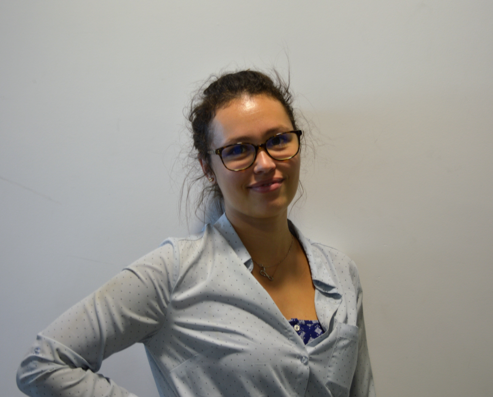
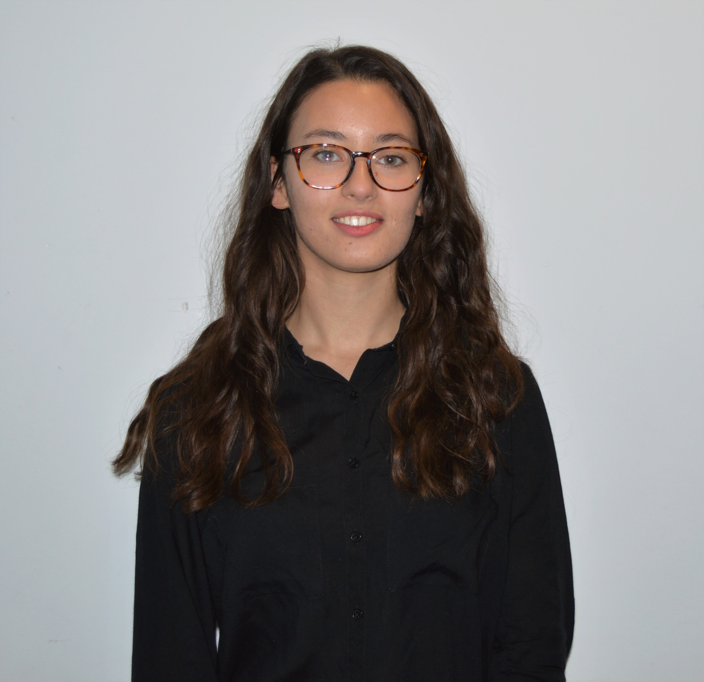
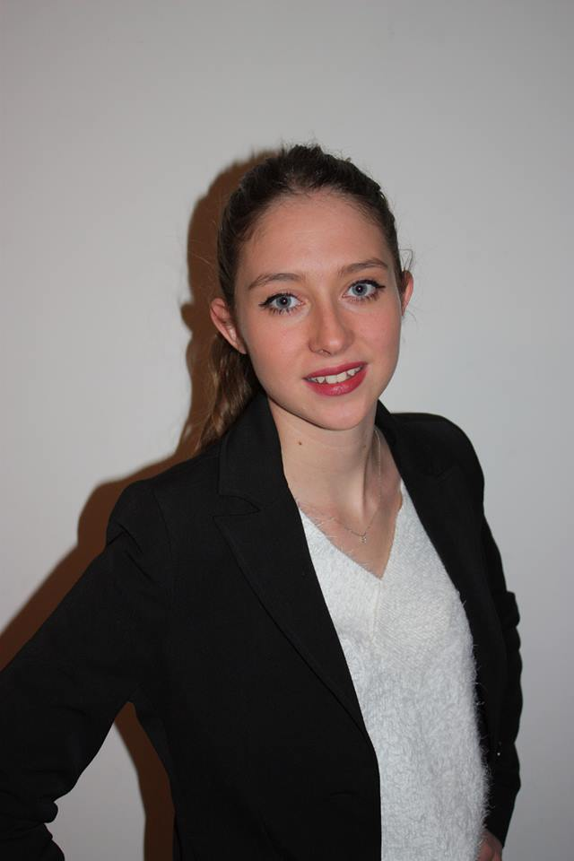

Étudiant en 5éme année au sein du département Électronique,
je préside Polytech Nice Conseil et veille au bon fonctionnement de l’association dans son ensemble.
Louis Plisson
Vice Président
Étudiant ingénieur en 3ème année en électronique,
je suis vice-président de Polytech Nice Conseil.
J’appuie le président dans ses décisions et dirige avec lui l’association.
Charlotte Boutevin
Tresorière

Étudiante en dernière année dans la filière Electronique, je suis responsable de la trésorerie à Polytech Nice Conseil.
Mon travail consiste à gérer les compte de l’association et veiller à ce que notre association se développe et réalise de bons résultats.
Lysa Zaïdi
Secrétaire

Étudiante en troisième année dans la filière Bâtiment Durable et Intelligent,
je suis secrétaire général à Polytech Nice Conseil.
Je suis chargée du bon fonctionnement administratif de l’association et j’assure la communication entre les adhérents et le bureau restreint.
Vincent Ung
Responsable Qualité
Étudiant en 1ere année en Science Informatique, je suis actuellement responsable du pôle qualité.
Je m'occupe de la constante amélioration de l'association dans les processus telle que le la création
de documents types, mais aussi du côté juridique de l'association, ie la validité des documents,
vérification des taux des cotisations pour l'année en cours...
Enzo Liberato
Responsable Développement Commercial
Etudiant en troisième année dans la filière Electronique,
je suis responsable du pôle développement commercial à Polytech Nice Conseil.
Mon travail regroupe le suivi d’étude ainsi que la prospection.
Camille Jullien
Responsable Ressources Humaines

Étudiante en troisième année dans la filière Science Informatique,
je suis responsable du pôle des ressources humaines à Polytech-Nice Conseil.
Mon travail consiste à recruter des consultants qui interviendront sur vos projets,
ainsi qu'a affecter, à vos projets, les personnes compétentes pour le réalisé.
Je gère aussi la partie financière comme les montants reversés aux consultants ou à l'association.
Simon Serrano
Résponsable DSI
Etudiant en troisième année de sciences informatique. Je suis responsable
des systèmes d'informations notamment le site web sur lequel vous naviguez.
Je m'occupe de tout ce qui est organisation des systèmes d'informations et me soucie
des améliorations que l'on pourrait y apporter.
Bastien Gillet
Responsable Communication
Étudiant en troisième année dans la filière Sciences Informatiques, je suis responsable du pôle communication. Mon travail est de vous tenir informés,
à travers nos comptes Facebook,
Twitter et LinkedIn, de tous les événements auxquels participe Polytech Nice Conseil et de toutes les informations importantes concernant l'association.